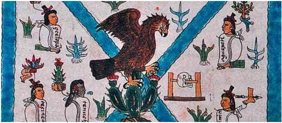

TOPONIMIA
México es un topónimo de origen mexicano —náhuatl— cuyo significado es discutido. Deriva del vocablo náhuatl «Mēxihco» AFI: [me:ʃiʔko], que designaba la capital de los mexicas. De acuerdo con Bernardino de Sahagún (s. XVI) —quien es la fuente documental más antigua—, el vocablo significaría «el lugar de Mexi», de «Mexitl» donde «metl» (maguey), «citli»/«xitli» (liebre) y «-co» (locativo): Mexi o Mexitl, quien fuera un legendario sacerdote nahua, guio a sus seguidores por la búsqueda de un águila sobre un nopal para la fundación de su ciudad luego de abandonar la también legendaria locación de Aztlán. Sin embargo, actualmente la versión más extendida sobre el significado del vocablo es: «el ombligo de la luna» o «en el lugar del lago de la Luna», de «Metzxico»: «metz(tli)» (luna), «xic(tli)» (ombligo, centro) y «-co» (locativo), según Cecilio Robelo y Alfonso Caso. Sahagún redacta el origen del vocablo de la siguiente forma:
Este nombre mexícatl se decía antiguamente mecitli, componiendose de me, que es metl por el maguey, y de citli por la liebre, y así se habría de decir mecícatl, y mudándose la c en x corrómpese y dícese mexícatl. Y la causa del nombre según lo cuentan los viejos es que cuando vinieron los mexicanos a estas partes traían un caudillo y señor que se llamaba Mécitl, al cual luego después que nació llamaron citli, liebre; y porque en lugar de cuna lo criaron en una penca grande de un maguey, de allí adelante llamóse mecitli, ...y cuando ya era hombre fue sacerdote de ídolos, que hablaba personalmente con el demonio (Huitzilopochtli), por lo cual era tenido en mucho y muy respetado y obedecido de sus vasallos, los cuales tomando su nombre de su sacerdote se llamaron mexica, o mexicac, según lo cuentan los antiguos.
Francisco Xavier Clavijero sugirió que el topónimo debía interpretarse como «[en el] lugar de Mexihtli», es decir, de Huitzilopochtli, pues Mexihtli era uno de sus nombres alternativos. En el mismo texto, Clavijero añade como nota que creyó por algún tiempo que el vocablo significaba «en el centro del maguey», pero que a través del conocimiento de la historia de los mexicas llegó a la conclusión de que el topónimo se refiere al dios tutelar de los aztecas.
El primer término o nombre propio con el que se hizo referencia al país, apareció el 6 de noviembre de 1813 cuando el Congreso de Anáhuac expidió el Acta Solemne de la Declaración de Independencia de la América Septentrional. Dicha denominación hacia clara referencia al nombre usado por la Constitución de Cádiz, para delimitar el territorio del Imperio Español que correspondía al Virreinato de la Nueva España y sus áreas dependientes (Capitanía General de Guatemala, Cuba, Florida, Puerto Rico y la parte española de la isla de Santo Domingo —hoy República Dominicana—), asumiendo con ello, que ese era el espacio geográfico sobre el cual se constituiría la nueva nación. Posteriormente el Decreto Constitucional para la Libertad de la América Mexicana del 22 de octubre de 1814 cambió dicha denominación, adaptándola con el término México (usado como adjetivo), y haciendo uso del mismo como gentilicio en algunos artículos.
Los documentos que antecedieron a la consumación de la independencia (Plan de Iguala y Tratados de Córdoba), usaron los dos términos antes mencionados (América Septentrional y América Mexicana), pero emplearon uno nuevo, al que acreditaban como nombre oficial de la nueva nación: Imperio Mejicano. Nombre usado definitivamente por el Acta de Independencia del Imperio Mexicano, firmada el 28 de septiembre de 1821 al consumarse la independencia.
Desde su conformación como Estado federal, el nombre oficial del país es Estados Unidos Mexicanos, aunque la Constitución de 1824 usaba indistintamente las expresiones Nación Mexicana y Estados Unidos Mexicanos. La Constitución de 1857 hace oficial el uso del nombre República Mexicana, pero en el texto se emplea también la expresión Estados Unidos Mexicanos. La Constitución vigente, promulgada en 1917, establece que el nombre oficial del país es Estados Unidos Mexicanos. No obstante, el uso generalizado de la síntesis México, habitual de todas las denominaciones anteriores, permitió que este prevaleciera como nombre común.
El gentilicio mexicano se ha empleado en la lengua española desde el contacto entre ibéricos y americanos con diferentes sentidos. Para los españoles del siglo XVI, los mexicanos eran los habitantes de México-Tenochtitlan y su lengua. Durante la Colonia, algunos criollos y peninsulares avecindados en Nueva España usaron el gentilicio para denominarse a sí mismos. Los líderes de la Guerra de Independencia vacilaron tanto en la denominación del país como de sus habitantes. A partir del Plan de Iguala, el país adoptará definitivamente el nombre de México y sus habitantes fueron todos mexicanos.
